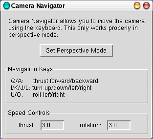

The Camera Navigator plugin provides a mean to navigate
the camera as if it were a ship. In normal mouse rotation, the scene is
rotated around an axis going through a user defined center for each
molecule. But when using the Camera Navigator, the user can rotate the
scene using axes centered on the camera. This allows for motions such
as "turning your head around", which are not easily accomplished using
the conventional VMD controls.
Currently, the Camera Navigator is operated by means of the keyboard,
using pre-defined keys:
Key
Function
Q/A
thrust forward/backward
I/K
rotate camera
up/down
J/L
rotate camera sideways left/right
U/O
roll camera left/right
Settings
The plugin comes with speed controls, which define by what increments
each tap of a keyboard key will rotate or advance the scene. Setting
the thrust or rotation speed controls to bigger numbers will make the
thrust or the rotation faster.
Requirements
The forward/backward thrust will only work properly in perspective
mode. In orthographic mode, this functionality still works, but since
the molecule will not shrink or grow with distance, there will be no
visual feedback of the motion of the camera.